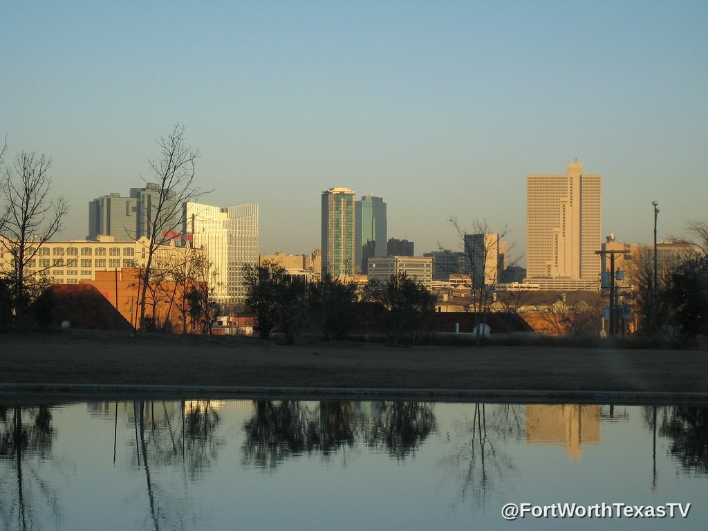
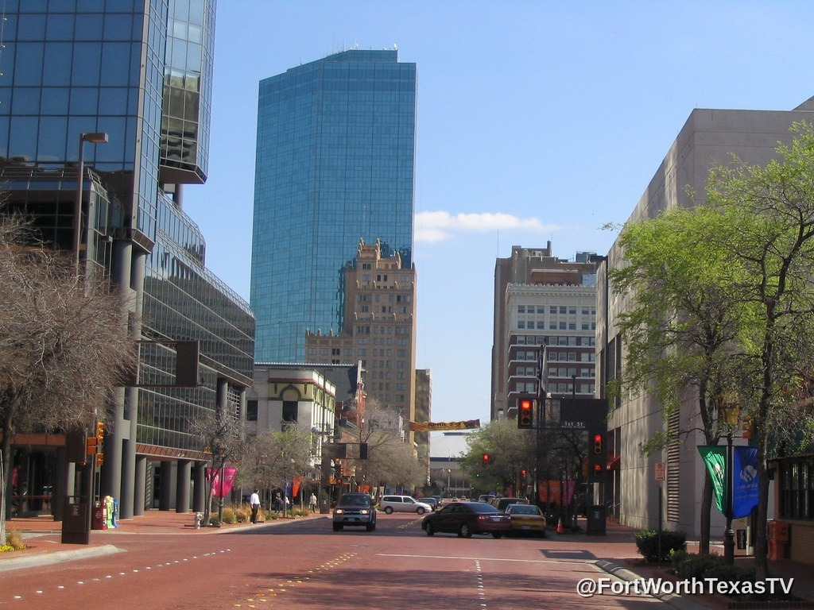
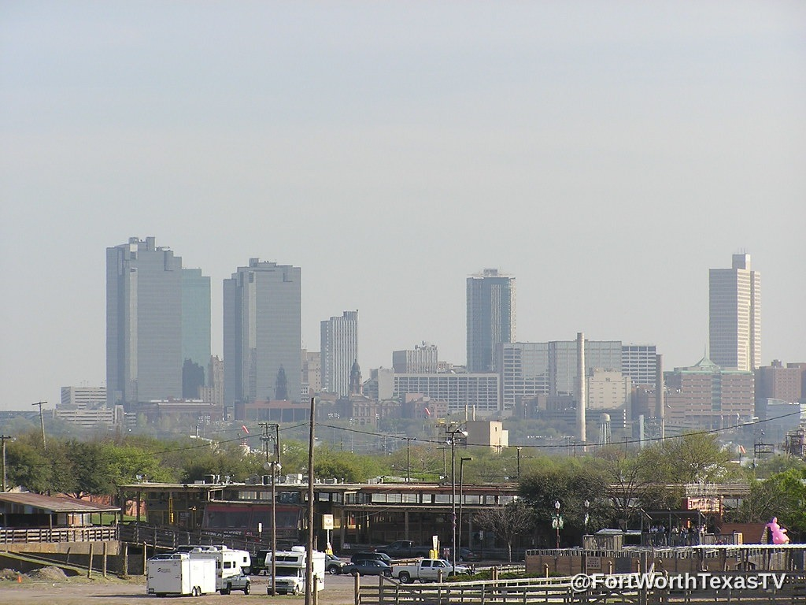

Sunny and a high of 69 in Fort Worth today
Follow us on Instagram @FortWorthTexasTV

👍 ❤️ 😮 ✅ written to disk (dry run)
story + scoring
{
"source": "National Weather Service Fort Worth",
"kind": "nws_forecast",
"score": 1.95,
"relevance": 2,
"url": "https://forecast.weather.gov/MapClick.php?lat=32.7555&lon=-97.3308",
"image_license": "openverse-cc",
"image_credit": "Photo: JoshBerglund19 (CC BY 2.0) via Flickr"
}Free & Fun Events in Arlington: November 19 - 25, 2026
Follow us on Instagram @FortWorthTexasTV
👍 ❤️ 😮 ✅ written to disk (dry run)
story + scoring
{
"source": "City of Arlington",
"kind": "rss",
"score": 0.9315,
"relevance": 2,
"url": "https://www.arlingtontx.gov/News-Articles/2026/Free-Fun-Events-in-Arlington-November-19-25-2026",
"image_license": "official",
"image_credit": "Photo: City of Arlington"
}Fort Worth police are looking for Joshua Rodriguez, wanted for aggravated robbery. Crime Stoppers is offering up to $2,000 for information leading to an arrest 🚨
Call 817-469-TIPS (8477) or submit a tip at 469tips.com. You stay anonymous.
Follow us on Instagram @FortWorthTexasTV
👍 ❤️ 😮 ✅ written to disk (dry run)
story + scoring
{
"source": "Fort Worth Police Department",
"kind": "wanted",
"score": 0.9295,
"relevance": 1,
"url": "https://police.fortworthtexas.gov/Crime-Public-Info/most-wanted",
"image_license": "official",
"image_credit": "Photo: Fort Worth Police Department"
}Pamela Rose Hiles – June 29, 1932 – Nov. 8, 2026
Follow us on Instagram @FortWorthTexasTV

👍 ❤️ 😮 ✅ written to disk (dry run)
story + scoring
{
"source": "Fort Worth Report",
"kind": "rss",
"score": 0.8115,
"relevance": 1,
"url": "https://fortworthreport.org/2026/11/18/pamela-rose-hiles-june-29-1932-november-8-2026/",
"image_license": "openverse-cc",
"image_credit": "Photo: Ken Lund (CC BY-SA 2.0) via Flickr"
}She vanished in 1982. Her father spent thousands searching for answers after her car was found at DFW Airport
Follow us on Instagram @FortWorthTexasTV

👍 ❤️ 😮 ✅ written to disk (dry run)
story + scoring
{
"source": "WFAA",
"kind": "rss",
"score": 0.6795,
"relevance": 3,
"url": "https://www.wfaa.com/article/news/local/texas-missing/kathy-goad-texas-missing-dfw-airport/285-2ec2c050-13c2-4f8c-afaa-a038c256056e",
"image_license": "openverse-cc",
"image_credit": "Photo: dph1110 (CC BY 2.0) via Flickr"
}Fort Worth Parade of Lights 2026: Street closures, parking & more tips. Downtown Fort Worth will sparkle and shine with holiday spirit when the 44th annual GM Financial Parade of Lights marches through the streets on Sunday, November 22.
Follow us on Instagram @FortWorthTexasTV
👍 ❤️ 😮 ✅ written to disk (dry run)
story + scoring
{
"source": "CultureMap Fort Worth",
"kind": "rss",
"score": 0.3388,
"relevance": 2,
"url": "https://fortworth.culturemap.com/news/entertainment/parade-lights-2026-street-closures/",
"image_license": "openverse-cc",
"image_credit": "Photo: Incase. (CC BY 2.0) via Flickr"
}GOODWILL NORTH CENTRAL TEXAS ANNOUNCES NEW HASLET STORE AND DONATION CENTER
Follow us on Instagram @FortWorthTexasTV
👍 ❤️ 😮 ✅ written to disk (dry run)
story + scoring
{
"source": "Fort Worth Business Press",
"kind": "rss",
"score": 0.2907,
"relevance": 2,
"url": "https://fortworthbusiness.com/featured/goodwill-north-central-texas-announces-new-haslet-store-and-donation-center/",
"image_license": "openverse-cc",
"image_credit": "Photo: longhorndave (CC BY 2.0) via Flickr"
}Cowboys trade football for food service in Thanksgiving tradition. Dak Prescott and his teammates traded the football field for food service, serving an early Thanksgiving meal to Salvation Army clients and spending time with fans.
Follow us on Instagram @FortWorthTexasTV
👍 ❤️ 😮 ✅ written to disk (dry run)
story + scoring
{
"source": "NBC 5 DFW",
"kind": "rss",
"score": 0.0941,
"relevance": 2,
"url": "https://www.nbcdfw.com/news/local/cowboys-trade-football-for-food-service-in-thanksgiving-tradition/4107526/",
"image_license": "openverse-cc",
"image_credit": "Photo: John Pozadzides (CC BY 2.0) via Flickr"
}